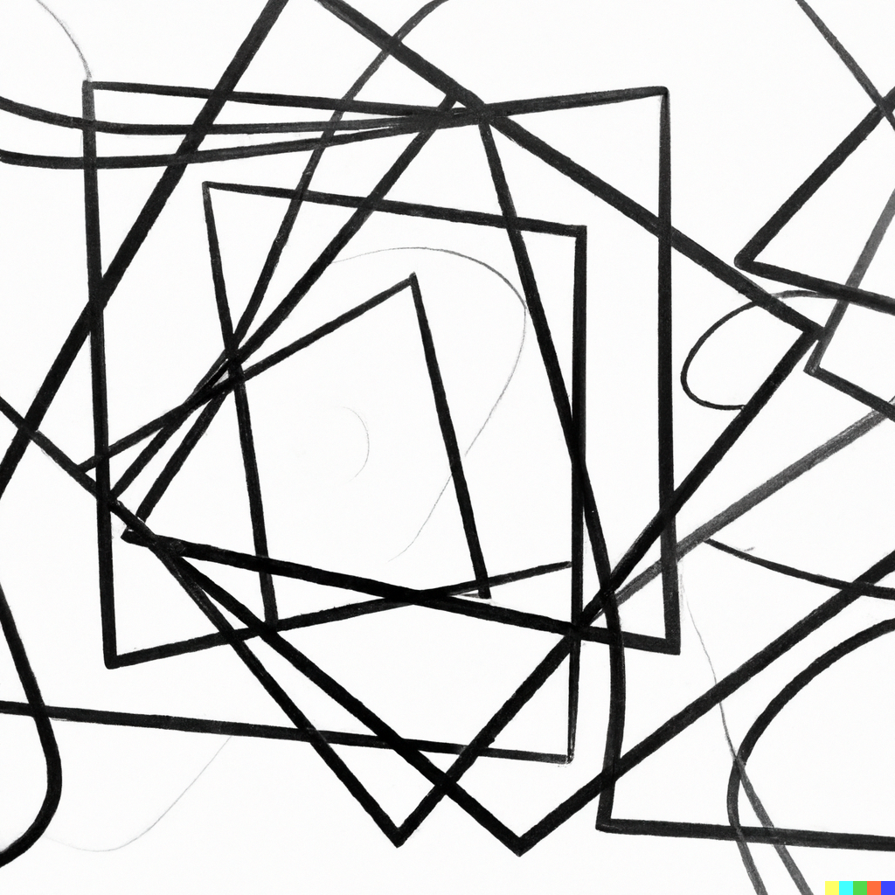

Hvorfor navngi verdier?
I det mennesker betrakter omverden, danner de en oppfatning om hva som er avgrensede ting og sorterer disse tingene i mengder. Sorteringskriterier kan variere, men de er ofte en blanding av hverdagslogikk og innlærte dogmaer, dvs. grunnsetninger som man (uten bevis) går ut fra som udiskutabele sannheter. Hvis man aktivt går inn for å finne bevis for disse dogmaene, så snakkes det om (vitenskapelige) fakta, dvs. beviste sammenhenger i verder rundt oss.
Vi har diskutert både dogmaer og fakta i forhold til vårt utforskningssubjekt, - datamaskin. Vi har sett at det finnes ideer om at menneskets hjerne funksjonerer på samme måte som den (data)maskinen som den samme hjernen har bygd. I utgangspunktet virker ikke slike ideer absurde, hvis vi antar at teknologi artefakter gjenspeiler både individets psykologiske (og også fysiologiske?) og de sosiale prosessene i grupper i samfunnet. Men det er (foreløpig) store forskjeller mellom mennesket og maskinen. For eksempel, Cory Doctorow har skrevet at mennesker er nevrologisk ikke i stand til å opprettholde årvåkenhet når de ser etter sjeldne hendelser. Menneskehjernen er selektiv og styrer fokuset hovedsakelig mot ting, som krever minst anstrengelse. Derfor faller konsepter som "veiledet KI" på sin egen urimelighet. Mennesker (i den evolusjonære stadiet som de nå er i) vil ikke klare å oppdage de, relativt sjelde, feilene som KI genererer.
Navngiving av variabler er en menneskelig ting. Maskinen (mer spesifikt maskinvaren) opererer ikke med variabler. Alle variabelnavn blir oversatt til minneadresser under fortolkning eller kompilering.
Temaets video:
- Dylan Beattie, "The Art of Code" .htm
Temaets kode
Kodeeksempel 1 (forstå behovet for variabler)
circle-50-outline-black = circle(50, "outline", "black") circle-50-solid-white = circle(50, "solid", "white") circle-50-solid-black = circle(50, "solid", "black") half-circle-50-black = crop(50, 0, 100, 100, circle-50-solid-black) circle-25-solid-white = circle(25, "solid", "white") circle-8-solid-black = circle(8, "solid", "black") circle-25-solid-black = circle(25, "solid", "black") circle-8-solid-white = circle(8, "solid", "white") combine-outline-with-circle = overlay-align("pinhole", "middle", circle-50-outline-black, circle-50-solid-white) combine-outline-with-circle-with-half-circle = overlay-align("pinhole", "middle", half-circle-50-black, combine-outline-with-circle) combine-circle-25-black-with-circle-8-white = overlay-align("pinhole", "middle", circle-8-solid-white, circle-25-solid-black) combine-circle-25-white-with-circle-8-black = overlay-align("pinhole", "middle", circle-8-solid-black, circle-25-solid-white) combine-circle-25-white-with-circle-8-black-with-outline-with-circle-with-half-circle = overlay-align("pinhole", "top", combine-circle-25-white-with-circle-8-black, combine-outline-with-circle-with-half-circle) yin-and-yang = overlay-align("pinhole", "bottom", combine-circle-25-black-with-circle-8-white, combine-circle-25-white-with-circle-8-black-with-outline-with-circle-with-half-circle)
Yin og Yang med variabler
Figur 1. Den "reelle" verden.
Figur 1 (generert av dall-e-2) kan være en beskrivelse av den "reelle", kaotiske verden som vi observerer før vi har begynt med analyse.
Figur 2. Yin-and-Yang algoritme visualisert.
Tenke algoritmisk: Sierpinski trekant
Spesifikasjon: tegn (i denne konteksten vis i det interaktive vinduet til CPO) en Sierpinski trekant, som tilsammen inneholder 13 likesidede trekanter.
Analyse:Modell: studere Sierpinski trekant (data) og finne ut hvilke former man kan bruke for å få tilfredsstilt spesifikasjonen. Tips: en kort versjon kan være at man velger størrelse på den største trekanten og deler den inn i 4 mindre trekanter, som har en lik størrelse, er likesidede, men kan ha forskjellig orientering i planet.
Analyse:Algoritme: bruk logisk tenkning og skisser for å lage en algoritme som kan tilfredstille spesifikasjonen. Tips: studere Sierpinski trekant (prosessen) og finne ut grunnleggende steg for å skape den (.htm).
Syntese:Implementasjon: hvis programmeringsspråket P er gitt (Pyret i vårt tilfelle), undersøke om det finnes innebygde funksjoner eller funksjoner fra biblioteker, som kan skape de elementene vi har funnet under analysen. Tips: åpne Pyrets spesifikajon (.htm) og søk på "triangle". Skisser alle stegene i prosessen for å tegne de 13 trekantene (det kan finnes uendelig mange måter å gjøre det på avhengig av valg og kombinasjoner av funksjoner fra programmeringsspråket).
Testing: det er utfordrende å skrive automatiske tester for visuelle objekter, siden disse blir oppfattet av mennesker. Med testing i dette tilfelle menes en interaktiv prøving-feiling syklus, hvor man kan raskt evaluere det visuelle resultatet av koden som man har skrevet.
Spørsmål for arbeid i klassen.
Søk på WWW eller bruk en chatbot-applikasjon og finn ut forskjell på innebygde funksjoner og funksjoner fra biblioteker i et programmeringssspråk.
Studer Pyrets spesifikasjon, eller søk på WWW , eller bruk chatbot-applikasjon for finne ut om det finnes en innebygd funksjon eller en funksjon i et bibliotek som kan brukes for å vise trekanter i det interaktive vinduet til CPO.
Tenk logisk og foreslå stegene for å tegne 13 trekanter. Prøv (og eventuelt feil) i Pyrets vinduer (definisjonsvinduet og det interaktive vinduet) et steg av gangen. Vurder de visuelle testresultater i det interaktive vinduet til CPO.
Alle språk har en "de facto" stilguide. Pyret er ikke et unntak og en slik guide finnes (.htm).
Referanser
- A portrait of Tenochtitlan. (2023). Thomaskole.nl. https://tenochtitlan.thomaskole.nl/ (A Portrait of Tenochtitlan, 2023)
- Brown, N., Guzdial, M. J., Krishnamurthi, S., & Mönig, J. (2023). Educational Programming Languages and Systems (Dagstuhl Seminar 22302). Dagstuhl Reports, 12(7). https://doi.org/10.4230/DagRep.12.7.205 (Brown et al., 2023)
- CS50x 2023. (2023). Harvard.edu. https://cs50.harvard.edu/x/2023/ (CS50x 2023, 2023)
- CSBridge. (2023). CSBridge. https://codeinplace.stanford.edu/ (CSBridge, 2023)
- Introduction to Computer Science and Programming in Python | Electrical Engineering and Computer Science | MIT OpenCourseWare. (2016). MIT OpenCourseWare. https://ocw.mit.edu/courses/6-0001-introduction-to-computer-science-and-programming-in-python-fall-2016/ (Introduction to Computer Science and Programming in Python | Electrical Engineering and Computer Science | MIT OpenCourseWare, 2016)
- Krishnamurthi, S. (2008). Teaching programming languages in a post-linnaean age. ACM SIGPLAN Notices, 43(11), 81–83. https://doi.org/10.1145/1480828.1480846 (Krishnamurthi, 2008)
- Kunnskapsdepartementet. (2023, April 20). Strategi for digital kompetanse og infrastruktur i barnehage og skole. Regjeringen.no; Regjeringen.no. https://www.regjeringen.no/no/dokumenter/strategi-for-digital-kompetanse-og-infrastruktur-i-barnehage-og-skole/id2972254/?ch=5
- Lau, S., & Guo, P. (2023). From "Ban It Till We Understand It" to "Resistance is Futile": How University Programming Instructors Plan to Adapt as More Students Use AI Code Generation and Explanation Tools such as ChatGPT and GitHub Copilot https://doi.org/10.1145/3568813.3600138 (Lau & Guo, 2023)
- Notional Machines. (2023). Notional Machines. https://notionalmachines.github.io/notional-machines.html (Notional Machines, 2023)
- PLATO Empire - Empire 1. (2016). Daleske.com. http://www.daleske.com/plato/empire1.php (PLATO Empire - Empire 1, 2016)
- Su, J., & Yang, W. (2023). A systematic review of integrating computational thinking in early childhood education. Computers and Education Open, 4, 100122–100122. https://doi.org/10.1016/j.caeo.2023.100122 (Su & Yang, 2023)
- Wing, J. M. (2006). Computational thinking. Communications of the ACM, 49(3), 33. https://doi.org/10.1145/1118178.1118215 (Wing, 2006)